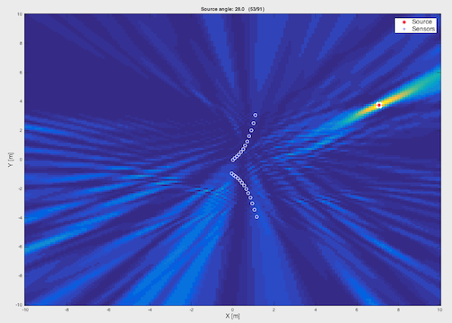
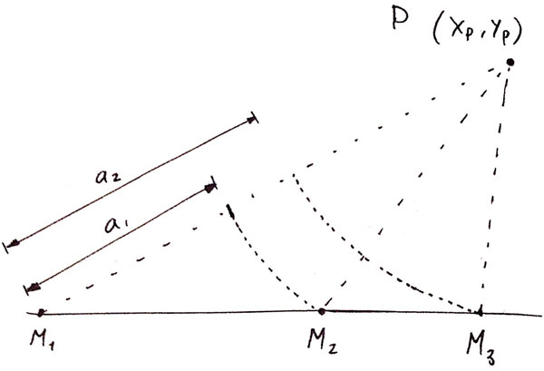
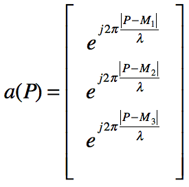

Fig. 2: data obtained with the Bartlett beamforming using the generalized Vandermonde vector.

Based on the Bartlett beamforming algorithm presented during the course Array and Sensor Signal Processing, a generalized version has been developed that considers spherical waves and arbitrary array geometries, which adds the following advantages:

Fig. 1: idea behind the redefinition of the Vandermonde vector for spherical waves and arbitrary disposition of sensors.
Originally, the Vandermonde vector is defined as a vector of complex numbers, of unity length and a phase that increases in linear steps (since it considers plane waves and a uniform linear array). Instead, it has been redefined as:

Eq. 1: re-definition of the Vandermonde vector for spherical waves and arbitrary array geometries.
Equation 1 shows how the weights are defined, from each source on located on P=(Px, Py) to each sensor on Mi=(Mix, Miy). Now, the parameter that changes is the vector given by P-M instead of the angle formed by the first element of the array and the source as in the "classical" construction. This allows to perform a sweep in all dimensions that the positioning system defines (two for the simulated cases).
The limitations of the uniform linear array are mainly related to the symmetry it shows around its main dimension and its lack of precision on the sides. These can be improved by using array geometries such as:
The developed simulation script takes a series of parameters that define the setup:
The following programs have been developed in Matlab:
The simulations have proved to offer very pleasing results, that clearly allow to distinguish not only the incoming angle but also the distance. As an example, a full circumference trajectory on a thirty elements horn array is displayed in figure 2.
Fig. 2: data obtained with the Bartlett beamforming using the generalized Vandermonde vector.